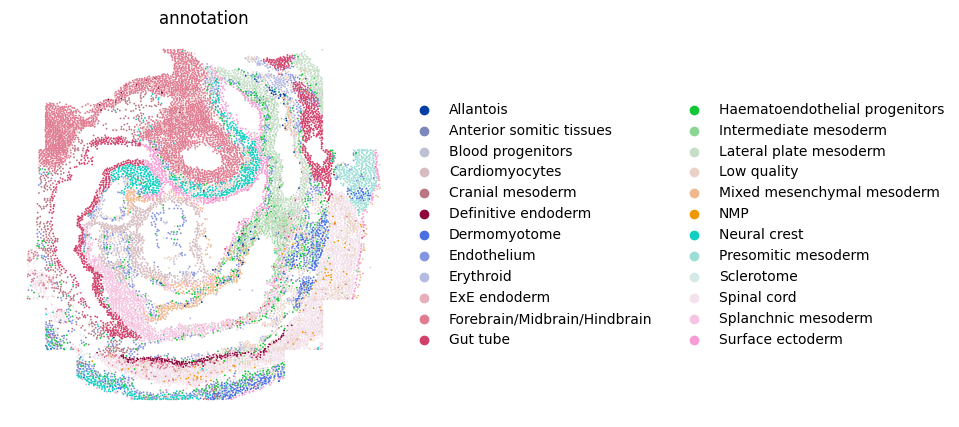
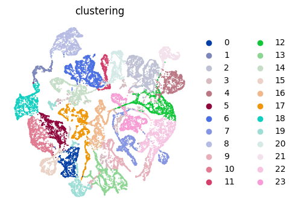

SeqFISH mouse embryo Analysis
In this vignette, We applied PROST onto a SeqFISH-profiled dataset to evaluate its general applicability.
Identify SVGs
1.Load PROST and its dependent packages
import pandas as pd
import numpy as np
import scanpy as sc
import os
import warnings
warnings.filterwarnings("ignore")
import matplotlib as mpl
import matplotlib.pyplot as plt
import PROST
PROST.__version__
>>> ' 1.1.2 '
2.Set up the working environment and import data
# the location of R (used for the mclust clustering)
ENVpath = "your path of PROST_ENV" # refer to 'How to use PROST' section
os.environ['R_HOME'] = f'{ENVpath}/lib/R'
os.environ['R_USER'] = f'{ENVpath}/lib/python3.7/site-packages/rpy2'
# init
SEED = 818
PROST.setup_seed(SEED)
# Set directory (If you want to use additional data, please change the file path)
rootdir = 'datasets/SeqFISH/'
input_dir = os.path.join(rootdir)
output_dir = os.path.join(rootdir,'results/')
if not os.path.isdir(output_dir):
os.makedirs(output_dir)
# Read counts and metadata
counts = pd.read_csv(input_dir + "counts.txt", sep = "\t")
metadata = pd.read_csv(input_dir + "metadata.txt", sep = "\t")
gene_name = counts.index
# Create anndata for embryo1 (embryo2 or embryo3)
'''Embryo1'''
metadata_embryo1 = metadata[metadata["embryo"]=="embryo1"]
counts_embryo1 = counts.loc[:,metadata_embryo1["uniqueID"]]
spatial_embryo1 = metadata_embryo1[["x_global","y_global"]]
spatial_embryo1.index = metadata_embryo1["uniqueID"]
# Create anndata
adata = sc.AnnData(counts_embryo1.T)
adata.var_names_make_unique()
# read spatial
adata.obsm["spatial"] = spatial_embryo1.to_numpy()
# read annotation
annotation = metadata_embryo1["celltype_mapped_refined"]
annotation.index = metadata_embryo1["uniqueID"]
adata.obs["annotation"] = annotation
adata.write_h5ad(output_dir+"/used_data1.h5")
>>> ... storing 'annotation' as categorical
>>> 'Embryo3'
3.Calculate and save PI
adata=sc.read(output_dir+"/used_data1.h5")
adata = PROST.prepare_for_PI(adata, percentage = 0.01, platform="SeqFISH")
adata = PROST.cal_prost_index(adata, connect_kernel_size=8, neighbors=8, platform="SeqFISH",del_rate=0.05)
adata.write_h5ad(output_dir+"/PI_result.h5")
>>> Filtering genes ...
>>> Trying to set attribute `.var` of view, copying.
>>> Normalization to each gene:
>>> 100%|██████████| 351/351 [00:00<00:00, 5237.45it/s]
>>> Gaussian filtering for each gene:
>>> 100%|██████████| 351/351 [00:40<00:00, 8.67it/s]
>>> Binary segmentation for each gene:
>>> 100%|██████████| 351/351 [00:00<00:00, 18470.16it/s]
>>> Spliting subregions for each gene:
>>> 100%|██████████| 351/351 [00:00<00:00, 8355.38it/s]
>>> Computing PROST Index for each gene:
>>> 100%|██████████| 351/351 [00:39<00:00, 8.99it/s]
>>> PROST Index calculation completed !!
4.Draw SVGs detected by PI
PROST.plot_gene(adata, platform="SeqFISH", size = 0.3, top_n = 25, ncols_each_sheet = 5, nrows_each_sheet = 5,save_path = output_dir)
>>> Drawing pictures:
>>> 100%|██████████| 1/1 [00:15<00:00, 15.74s/it]
>>> Drawing completed !!

5.Calculate Moran’I and Geary’C for SVGs dected by PI
To assess the credibility of SVGs detected by these methods, we respectively used the spatial information of SVGs to calculate Moran’s I and Geary’s C statistics.
PROST.cal_moran_I_and_geary_C_for_PI_SVGs(adata, PI_top_n=50, save_path = output_dir)
>>> 100%|██████████| 50/50 [20:36<00:00, 24.73s/it]
>>> Average Moran'I of SVGs detected by PI = 0.34560184671132244
>>> Median Moran'I of SVGs detected by PI = 0.36483518066319803
>>> Average Geary'C of SVGs detected by PI = 0.6171409870242501
>>> Median Geary'C of SVGs detected by PI = 0.5998499527724659
| geneID | PI | Moran_I | Geary_C | |
|---|---|---|---|---|
| 0 | Hoxb9 | 1.000000 | 0.488931 | 0.465319 |
| 1 | Cdx2 | 0.566876 | 0.411493 | 0.548865 |
| 2 | Hoxc8 | 0.558326 | 0.302270 | 0.661814 |
| 3 | Wnt5a | 0.554483 | 0.429061 | 0.535140 |
| 4 | Bambi | 0.483233 | 0.424679 | 0.537970 |
| 5 | Hoxa9 | 0.479378 | 0.348462 | 0.628304 |
| 6 | Hoxb4 | 0.465979 | 0.291391 | 0.673090 |
| 7 | Hoxb3 | 0.453696 | 0.275454 | 0.681236 |
| 8 | Tmem119 | 0.449840 | 0.420086 | 0.532817 |
| 9 | Fgfr2 | 0.440052 | 0.296640 | 0.670719 |
| 10 | Dusp6 | 0.436945 | 0.409998 | 0.546796 |
| 11 | Tfap2b | 0.393255 | 0.370571 | 0.585511 |
| 12 | Tfap2a | 0.388913 | 0.325753 | 0.623145 |
| 13 | Smim1 | 0.384021 | 0.259597 | 0.701088 |
| 14 | Aldh1a2 | 0.379967 | 0.441316 | 0.526007 |
| 15 | Hoxa11 | 0.350988 | 0.294576 | 0.655135 |
| 16 | Tgm1 | 0.346816 | 0.055714 | 0.915164 |
| 17 | Snai1 | 0.341068 | 0.361320 | 0.599254 |
| 18 | Apln | 0.340328 | 0.126965 | 0.830317 |
| 19 | Ttn | 0.338863 | 0.628871 | 0.343572 |
| 20 | Cldn4 | 0.330571 | 0.427771 | 0.530761 |
| 21 | Tbx4 | 0.321771 | 0.442577 | 0.498330 |
| 22 | Sox10 | 0.318814 | 0.335579 | 0.630862 |
| 23 | Hoxd9 | 0.318049 | 0.225928 | 0.741588 |
| 24 | Hemgn | 0.309839 | 0.128971 | 0.838806 |
| 25 | Tbx5 | 0.308528 | 0.441978 | 0.515955 |
| 26 | Msx1 | 0.304036 | 0.459791 | 0.498687 |
| 27 | Hcn4 | 0.297837 | 0.530591 | 0.472810 |
| 28 | Suz12 | 0.296183 | 0.143624 | 0.823324 |
| 29 | Evx1 | 0.290166 | 0.313486 | 0.646443 |
| 30 | Wnt2 | 0.289947 | 0.494649 | 0.471269 |
| 31 | Cntfr | 0.288735 | 0.378909 | 0.587733 |
| 32 | Kmt2d | 0.283215 | 0.199363 | 0.765696 |
| 33 | Afp | 0.273933 | 0.133562 | 0.840113 |
| 34 | Hand1 | 0.271916 | 0.457340 | 0.501484 |
| 35 | Hoxb1 | 0.271296 | 0.439619 | 0.527100 |
| 36 | Sfrp5 | 0.271183 | 0.368350 | 0.600446 |
| 37 | Podxl | 0.267092 | 0.420093 | 0.544644 |
| 38 | Rgl1 | 0.265776 | 0.168780 | 0.792695 |
| 39 | Popdc2 | 0.263662 | 0.552754 | 0.417445 |
| 40 | Nanog | 0.260469 | 0.080936 | 0.879910 |
| 41 | Dnmt3a | 0.259922 | 0.285143 | 0.681970 |
| 42 | Pdgfra | 0.257661 | 0.416672 | 0.540798 |
| 43 | Gata4 | 0.256379 | 0.544601 | 0.425685 |
| 44 | Cbfa2t3 | 0.255569 | 0.174157 | 0.785340 |
| 45 | Tcf7l1 | 0.254504 | 0.186455 | 0.777835 |
| 46 | Slc4a1 | 0.254302 | 0.321962 | 0.624245 |
| 47 | Pdgfa | 0.252928 | 0.308816 | 0.644064 |
| 48 | Gata5 | 0.252056 | 0.499571 | 0.458818 |
| 49 | Gata6 | 0.251892 | 0.434917 | 0.530933 |
Clustering
# Set the number of clusters
n_clusters = 24
1.Read PI result and Expression data preprocessing
PROST.setup_seed(SEED)
# Read PI result
adata = sc.read(output_dir+"/PI_result.h5")
sc.pp.normalize_total(adata)
sc.pp.log1p(adata)
2.Run PROST clustering
PROST.run_prost_clust(adata,
platform="SeqFISH",
min_distance = 3,
init="mclust",
n_clusters = n_clusters,
tol = 5e-3,
laplacin_filter = True,
lr = 0.1,
SEED=SEED,
max_epochs = 500,
post_processing = False)
3.Save result
adata.write_h5ad(output_dir + "/PNN_result.h5")
clustering = adata.obs["clustering"]
clustering.to_csv(output_dir + "/clusters.csv",header = False)
embedding = adata.obsm["PROST"]
np.savetxt(output_dir + "/embedding.txt",embedding)
>>> Calculating adjacency matrix ...
>>> Running PCA ...
>>> Laplacian Smoothing ...
>>> Initializing cluster centers with mclust, n_clusters known
>>> Epoch: : 501it [3:17:42, 23.68s/it, loss=0.28359604]
>>> Clustering completed !!
4.Plot annotation
plt.rcParams["figure.figsize"] = (5,5)
ax = sc.pl.embedding(adata, basis="spatial", color="annotation",size = 7,s=6, show=False, title='annotation')
ax.invert_yaxis()
plt.axis('off')
plt.savefig(output_dir+"/annotation.png", dpi=600, bbox_inches='tight')

5.Plot clustering result
plt.rcParams["figure.figsize"] = (5,5)
ax = sc.pl.embedding(adata, basis="spatial", color="clustering",size = 7,s=6, show=False, title='clustering')
ax.invert_yaxis()
plt.axis('off')
plt.savefig(output_dir+"/clustering.png", dpi=600, bbox_inches='tight')
6.Plot UMAP
plt.rcParams["figure.figsize"] = (4,4)
sc.pp.neighbors(adata, use_rep="PROST")
sc.tl.umap(adata)
ax = sc.pl.umap(adata, color="clustering", frameon=False, size=8,show = False)
plt.axis('off')
plt.subplots_adjust()
plt.savefig(output_dir+"/umap.png", dpi=600,bbox_inches='tight')
